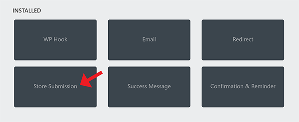

Ninja Forms addon - Make A Difference by “Treehugger” v1.0
“Make A Difference - Ninja Forms”
Created: 01/25/2019
Updated:
01/25/2019
By: Alex Romijn
Email: plugins.service@treehugger.nl
Thank you for purchasing my plugin. If you have any questions that are beyond the scope of this help file, please feel free to email via my user page contact form here. Thanks so much!
Table of Contents
- Intro
- Installation
- Install the plugin via Wordpress
- Install the plugin with FTP
- Setup a form
- Create a form
- Setup 'Make A Difference' action
- Add the action
- Configure the action
- Publish your form on a page
- Add a visual counter to your form
- Add a visual counter to your page
- Statistics
- Troubleshooting / FAQ
- Support
- Changelog
A) Introtop
What is Make A Difference - Ninja Forms
The addon Make A Difference for Ninja Forms is a plugin to add some extra functionality for Ninja Forms, so you can built simple en more complex petitions or emailprotests with Ninja Forms. The plugin creates a way to count mails send or petition signatures and create a textual or visual counter. The addon can add a field with counter to the form, but also a shortcode can be used. This way you don't have to have the form present to show results. It has also implement this shortcode as building block for WPBakery (former Visual Composer).
You can check de demo form here: https://demo.treehugger.nl/
Features
- Easy integration with Ninja Forms
- Setup and customize a new action to quickly create a protest mail or petition
- Show results with visual counters. Currently there are 4 ways to show this, but we are planning more in the future.
- Integration with the Ninja Forms - Confirmation & Reminder plugin. This plugin is added to this plugin as bonus. See seperated documentation for this addon.
Requirements
- Wordpress 4.4+
- Ninja Forms 3.1 +
- (use of the Store Submission action is needed to make this addon work, this is active by default when creating a new form)
B) Installationtop
There are two ways to install the plugin.
Install the plugin via Wordpress
Follow the following steps:- Step 1: Login to your Wordpress Admin Panel and go to Plugins > Add New > Upload Plugin
- Step 2: Find the nf-makeadifference.zip file on your computer and click Install Now
- Step 3: Click Activate to activate this plugin.
Install the plugin with FTP
Follow the following steps:
- Step 1: Login to your hosting space via an FTP client (for example: FileZilla, Total Commander)
- Step 2: Unzip the nf-makeadifference.zip file to your "wp-content/plugins" folder.
- Step 3: Login to your Wordpress Admin Panel and go to Plugins
- Step 4: Activate the newly installed plugin by going to Plugins > Installed Plugins and clicking the Activate button.
Now you're good to go to the next step.
C) Setup a formtop
Let's setup a form in Ninja Forms so we can add our action to it.
Create a form
- Step 1: Login to your Wordpress Admin Panel and go to Ninja Forms > Add new
- Step 2: Click on 'Add new'

- Step 3: Select 'Blank Form' to start from scratch

- Step 4: Place the fields you want in the form. You can find more here about building a form in the documentation of Ninja Forms.
- Stel 5: Click on Done and after that on Publish.
Now let's add our action to it. Go to the next step.
D) Setup 'Make A Difference' actionTop
Follow the next instruction to add the action to the form for the 'petition' functionality
Add the action
- Step 1: Click on the tab 'Emails & Actions'
- Step 2: You now see a list of 'actions', like 'succes message', 'email' and 'Store Submission'. These three are default when creating a form. The 'Store Submission' is an action which saves submitted data to the database. This action is mandatory for this plugin to work. If this action is somehow missing. Click on the Add button in the right bottom corner of the screen.
And then add the 'Store Submission' action by clicking on the button. It will be added to the action list.

- Step 3: Now let's add the action. Click on the Add button in the right bottom corner of the screen and select 'MAD :: Petition'.
- Step 4: After adding, a side window shows where you can adjust the setting of the action. If you don't see it, then just click on the config icon on the side of the action.
Configure the action
Below you can find a list of settings and what they mean:
- Type: You can switch between Protest Mail and Petition. This way you can differentiate between type of protests. Protest mail is when someone sends an email directly to a person or company. A petition will gather the formdata of the person. You can export it later to deliver it at once to support your cause.
- Goal: For petitions normally a goal is set. You can change this along the way. Goal is used for visual representation of the statistics of the protest mails or petition.
- Submissions counted: Default is 0, but when protest is running, this will show how many has send.
- Submissions counted (offline): Sometimes when having a petition you also will go to the street to let people sign. With this field you can add a number to the total from this.
E) Publish your form on a pagetop
Now it's time to publish your form on a page. Follow the steps below.
- Step 1: Login to your Wordpress Admin Panel and go to Pages > Add new
- Step 2: Click on the Add Form button
- Step 3: Select your form and click on Insert
- Step 4: Click on Publish. Good job! Your page with the form is ready. Click on View Page to go directly to your page and let's try it out.
- Note: In Wordpress 5.0+ with Gutenberg you have to look on the right below the tab Document and then choose Append a Ninja Form
F) Add a visual counter to your formtop
So, now you have created a petition or protest mail form. What if you want to show the visitor how many mails are send or how many people signed the petition? The addon provides customizable visual counters.
The list with available counter
- Text counter (code=onlypercentage): only shows the percentage
- Bar - Simple (code=barsimple): Simple bar graph
- Bar - Animated (code=barsimpleanimated): Same as Bar - Simle, but animated from 0% to the current percentage.
- Bar - 3D (code=bar3d): A bar with 3d effect
- Bar - 3D Animated (code=bar3danimated): The same as above, but animated
How to add a visual counter to your form?
- Step 1: Go to Ninja Forms > Dashboard. And click on your form to edit:
- Step 2: On the right bottom click on the 'add' button.
- Step 3: On the right side find the 'MAD :: Progress' field and click on it or drag it to the position in the form on the left.
- Step 4: On the left, click on the field to bring up the settings panel on the right.
- Step 5: The settings explained:
- Style of progress: Use this setting to change the counter style. (see the list of available counters)
- Color of bar: change the default color of the progress bar
- Backgroundcolor bar: change the backgroundcolor of the container in which the progress bar resides
- Textcolor: the percentage is shown on the progress bar. You can change the color here.
- Display: Below this you can add additional classes for the container of the element or the element itself. This is usefull if you want to create your own style.
G) Add a visual counter to your pagetop
Sometimes you only want to show the statistics of a petition on a page (like on a frontpage or in a news item). That's why we also have seperated shortcodes to use in pages or posts. With these shortcodes you can display it how you want it. How to use them: (for example by add those to a page)
- Go to pages > add new (or edit a page)
- Click on the tab 'text' in de editor.
- Now use any of the following shortcodes:
- [madgraph type="$type" formid="$formid" color="#ff0000" bgcolor=""#ffffff" txtcolor="#ffffff"]
For $type use the codes you can find here
For $formid use the id of the form. You can find the id by going to Ninja Forms > dashboard.
With the attributes color, bgcolor and txtcolor you can change the colors of the visual counter. - Use [madgraphgoal formid="$formid"] to show just the goal. You can use it in a sentence, like 'The goal of the petition is to gather [madgraphcoal] signatures.'
- Use [madgraphsignatures formid="$formid"] to show only the total of confirmed signatures. You can also use that in a sentence, for example: "Already [madgraphsignatures] people have signed."
- [madgraph type="$type" formid="$formid" color="#ff0000" bgcolor=""#ffffff" txtcolor="#ffffff"]
- Try it out. Then save the page or post to show the results.
How to add it to a page with WPBakery (former Visual Composer)?
- Go to pages > add new (or edit a page)
- If WPBakery Page Builder isn't on, click on 'Backend Editor' to enable it.
- Click on the add button to place a new block
- A new popup is shown. Click on the tab Make A Difference. And after that on the block Make A Difference
- Fill in the formid and your desired settings. Click Save Changes.
- Save the page. And check the page online
H) Statisticstop
With the plugin there is also posibility to show the statistics of the petition/protestmail.
- Go to Ninja Forms > Make A Difference
- Select the form you want to show the statistics from

Now that you have selected a form a page is shown with the counter. At the bottom there is one button or two. This depends if you have installed the addon Ninja Forms - Confirmation & Reminder.
Export button
The export button is only shown if you have installed the addon Ninja Forms - Confirmation & Reminder. This addon is provided with this addon. This addon helps to ask for a confirmation when someone has signed the petition.
When clicking the button an export is made of all submissions who are confirmed. When not using this addon, you can use the builtin export function of Ninja Forms.
Recalculate total
Sometimes you want to erase some submissions manually. Because there are double or some test entries. With this button the system will calculate the new total and change this in the form action setting.
Ofcourse you can also change that manually, but this way no (human) error will be made.
I) Troubleshooting / Questionstop
- It is not working
Check if you have the action 'Store Submission' added to your form. The addon needs this one to work. - The plugin gives an error when activating
At the moment we don't have any known incompatibilities with other plugins. Ofcourse it can happen. Please contact us when experiencing problems. Also try to disable other plugins to be sure if it is a conflict between plugins. - I have some feature requests or want to give some feedback
We love to hear feedback or feature requests for future versions of this plugin .
J) Supporttop
Thank you so much for purchasing this plugin. I'd be glad to help you if you have any questions relating to this plugin. Please contact me at plugins.service@treehugger.nl (language: dutch or english)
Q) Changelogtop
### 01/25/2019 ### v 1.0
new: first version of the plugin
new: Extra tools to use a ninja form for an email petition or protestmail
new: Visual counters to show stats
new: Export confirmed signatures
Heads up for the next versions:
We are already working on an update. We are working on:
- more ways to show the statistics of the protest/petition, so more visual counters, but also more options to change it in the backend
- hooks in the plugin to built in own functionality
- show a list of people who signed the petition
- daily or weekly automatic reporting of statistics of the petition
- close a form automatically after reaching the goal

Alex Romijn - Treehugger